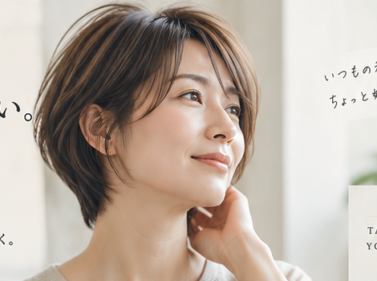
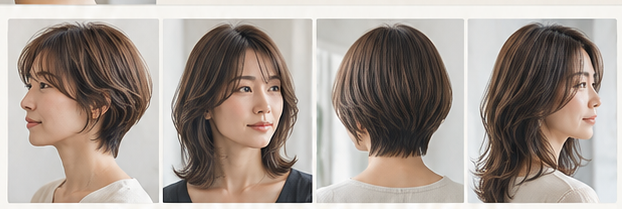
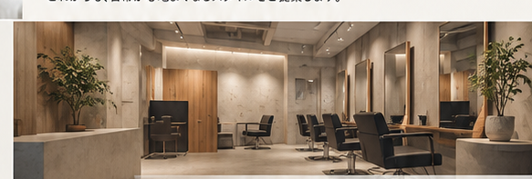
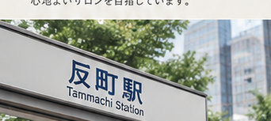

◌
丁寧なカウンセリング
髪の悩みも、なりたいイメージも、急がずに整理していきます。
髪から、日常を少し、やさしく。
骨格・髪質・生え癖まで見ながら、
なりたいイメージを一緒にほどいていく。
※掲載ビジュアルはイメージです。

“わかってくれた”から、仕上がりまで安心できる。
髪の悩みも、なりたいイメージも、急がずに整理していきます。
一人ひとりの条件を見ながら、無理のない似合わせへ。
朝のセットまで想像して、まとまりやすさを大切にします。
髪の状態に合わせて、ケアも含めた選択肢をご提案します。
※掲載ビジュアルはAI生成のイメージです。実際の施術例・スタッフ・お客様の写真ではありません。
COUNSELLING
髪の状態や悩みを丁寧に伺い、骨格・髪質・生え癖まで見極めて、今のあなたにできる現実的なスタイルをご提案します。
一緒に考えながら、理想のイメージを少しずつ形にしていきます。
STYLE & SERVICE
カットをベースに、カラーやトリートメントで髪の質感まで整え、まとまりのある美しいスタイルをつくります。

※掲載ビジュアルはAI生成のイメージです。実際の施術例・スタッフ・お客様の写真ではありません。
対応メニューを見る →※掲載ビジュアルはAI生成のイメージです。実際のお客様の写真ではありません。
CUSTOMER VOICE
仕上がりの美しさだけでなく、翌日からスタイリングしやすいこと、髪がまとまりやすいこと。
来店後の日常まで見据えた仕上がりを大切にしています。
SALON ATMOSPHERE
半地下の落ち着いた空間で、周りを気にせずゆっくりとお過ごしいただけます。
髪のことだけでなく、日常のことも話したくなるような心地よいサロン時間を。

※店内ビジュアルはAI生成のイメージです。実際の店内写真ではありません。

髪のこと、これからのこと。
まずは、あなたの“なりたい”を聞かせてください。